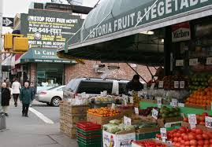

Queens/Astoria
Astoria is one of New York City's most culturally diverse neighborhoods and home to arts institutions, food destinations and shopping that make a visit eminently worth the 20-minute subway ride from Times Square. Known primarily as the City's traditionally Greek neighborhood, Astoria is also home to a significant number of residents of Italian, Brazilian, Baltic, Irish and Egyptian descent, as well as a new set of émigrés—younger, hip, creative types drawn to the neighborhood's affordable housing, inexpensive amenities and short commute to Manhattan. There's much to enjoy here.Astoria encompasses a large section of northwestern Queens. For visitors, it's best to think of it as a collection of smaller neighborhoods centered on each of five thoroughfares (36th Avenue; Broadway; 30th Avenue; Ditmars Boulevard running east-west; and Steinway Street running north-south) and to concentrate on one or two of them at a time.

 |
 |  |
 |
|
To know more about what to do in Astoria, click here .